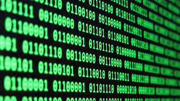

Binair Stelsel
ASCII-tabel
Het ASCII-tabel (American Standard Code for Information Interchange) is een lijst vol met symbolen gekoppelt aan een bepaald getal. In deze tabel staan in totaal 128 verschillende tekens, zo is spatie bijvoorbeeld gekoppelt aan het getal 32, de hoofdletter A-Z zijn gekoppelt aan de getallen 97 tot 122 en de kleine letters a-z zijn gekoppelt aan de getallen 65 tot 90. De ASCII-tabel wordt gebruikt door computers, omdat ASCII het gemakkelijker voor computers maakt om tekst weer te geven en om met elkaar te communiceren. Hieronder vind je de ASCII-tabel!

Bits en Bytes

Elke 0 of 1 in het binair stelsel noem je een bit. In computers zetten ze vaak 8 bits achter elkaar, dit noem je een byte. Duizend bits maakt 1 kilobit en duizend bytes maakt 1 kilobyte en een miljoen bits/bytes maakt 1 Megabit/Megabyte. Naast bits, bytes, megabits, megabytes, kilobytes en kilobits zijn er nog veel meer grootheden, zo gaat in een computer vaak nog veel meer bits, soms wel terabytes. Dit zijn 1.000.000.000.000 bytes, dus onverstelbaar veel!
Het binair stelsel
Het binair stelsel is een talstelsel, net zoals wij elke dag gebruik maken van het tientallige talstelsel. Het verschil is dat wij dat doen met behulp van de getallen 0 t/m 9, zo maak je negenendertig met de getallen 3 en 9, en maak je honderddertien met de getallen 1, 1 en 3. In het binair stelsel doen we dat met de getallen 0 en 1, zo is 5 in het binair stelsel: 0101
Bij het binair stelsel tel je van rechts naar links, dit kan erg verwarrend zijn. Het getal 15 schrijf je in het binair stelsel uit als: 1111 (8+4+2+1=15). Je ziet in dit voorbeeld dat de getallen verschillende waarden hebben afhankelijk van hun positie en of het een '0' of een '1' is. Elk getal is een macht van 2, zo is de meest rechter getal gelijk aan 2⁰. Het getal links daarvan heeft een waarde van 2¹, het getal links daarvan heeft weer een waarde van 2², enzovoort. Eigenlijk worden de getallen verdubbelt naar van rechts naar links. Als je een '0' op een van de plekken zou neerzetten, is het getal op die plek ook gelijk aan 0, zo is 01100 bijvoorbeeld gelijk aan 12 (0+8+4+0+0=12). Hieronder staat een spel genaamd 'Binary Bonanza', hiermee kun je op een leuke manier oefenen met de binaire getallen.
Conclusie
Het binair stalstelsel kan dus erg ingewikkeld zijn, dus waarom gebruiken we het binair stelsel? Onze computers kunnen maar twee waarden aannemen: 0 en 1. Dit is omdat de bits eigenlijk een soort schakelaars zijn die alleen uit of aan kunnen. Deze twee acties (aan en uit) staan in verbinding met de twee waarden (0 en 1). Met gebruik van het binair stelsel kiezen we een bepaalde hoeveelheid bits om te gebruiken. Dit wordt bijvoorbeeld gebruikt bij het maken van kleuren op je beeldscherm, hier lees je meer over bij 'kleurmoddelen'.